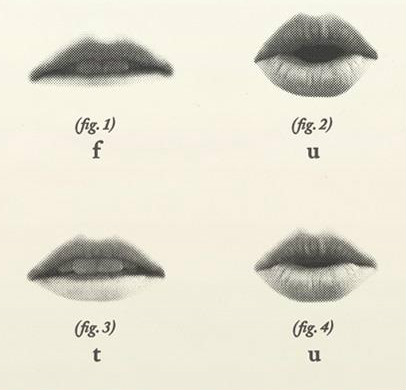

-
1Federico G.Lorca
La poesía no quiere adeptos,quiere ... -
 4Leonora C.
4Leonora C.
Una vez un perro le ladró a una máscara que hice... -
Nahui O.
Independiente fui, para no permitir pudrirme sin renovarme; hoy... -
4Tina M.
o artista con relación a mis trabajos fotográficos... -
14Rosario C.
Éramos el abrazo de amor en que se unían el cielo con la tierra -
3Mardou F.
le he pedido perdón muchas veces. -  Entre boca andamos
-
7Jack Kerouac
en que uno lo sabe todo y todo queda decidido para siempre... -
7Elena G.
El amor no existe. Existe sólo un mundo que trabaja, ... -
34William S.B
La única ética posible es hacer lo que uno quiere hacer. -
8Allen G.
América, ¿Cuándo pondremos... -
Neal Cassady
Voy a parar de escribir. Oh sí, para liberarme... -
27Gregory C.
¿Debo casarme? ¿Debo ser bueno?Sorprender a la chica... -
14Alejandra P.
¿Y qué deseaba yo? Deseaba un silencio perfecto. Por eso hablo... -
3Antonieta R.M.
Con su gracia redimió mi alma. Sin Ud. qué desolación, la muerte del alma... -
7Camille C.
Reclamo la libertad gritando a pleno pulmón… Merecía algo más que esto... -
Josephine B.
Americanos, los ojos del mundo están sobre ustedes. ¿Cómo se puede esperar ... -
7Signos
Reclamo la libertad gritando a pleno pulmón… Merecía algo más que esto..
Entre boca andamos
Tina,Federico, Leonora, William, Allen...
Federico G. Lorca
La agonía física, biológica, natural,
de un cuerpo por hambre, sed o frío, dura poco, muy poco,
pero la agonía del alma insatisfecha dura toda la vida.
22:35
La estricta formación técnica de la Academia no daba lugar a la experimentación.
Todo lo que yo aprendía,
lo aprovechaba para pintar por mi cuenta
las cosas que me interesaban,
que es lo que podemos llamar, unida a la técnica,
la iniciación a la personalidad.23:34
Allen G.
Nuestro objetivo era salvar el planeta y alterar la conciencia humana.
Eso llevará mucho tiempo, si llega a pasar. 23:48
Jack K.
Nada de intervalos que rompan las estructuras de la frase
ya arbitrariamente entrecortada mediante falsos puntos comas y tímidas comas,
en la mayoría de los casos inútiles,
sino vigorosos guiones que aíslan los momentos respiratorios
(como los músicos de jazz que recuperan el aliento entre dos largas frases),
las pausas medidas que articulan la estructura de nuestro discurso.
01:13
Leonora C.
Le comentaba a Remedios
Una vez un perro le ladró a una máscara que hice,
ha sido el comentario más honorable que he recibido.01:15
Tina M.
Siempre que se emplean las palabras “arte”
o “artístico” en relación a mi trabajo fotográfico
recibo una impresión desagradable debida
seguramente al mal uso y abuso que se hace de ellas.
01:38
William S.B.
Los artistas son los verdaderos arquitectos del cambio y no los políticos o legisladores que aplican el cambio luego de que sucedió. 02:15